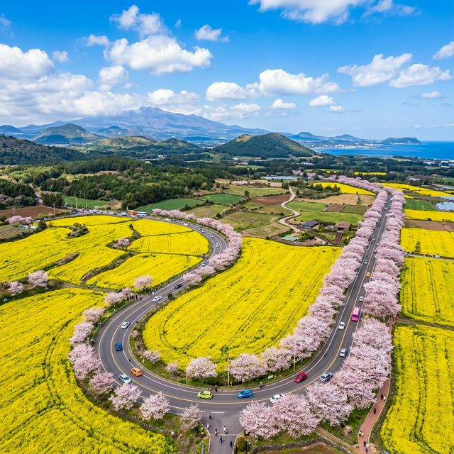
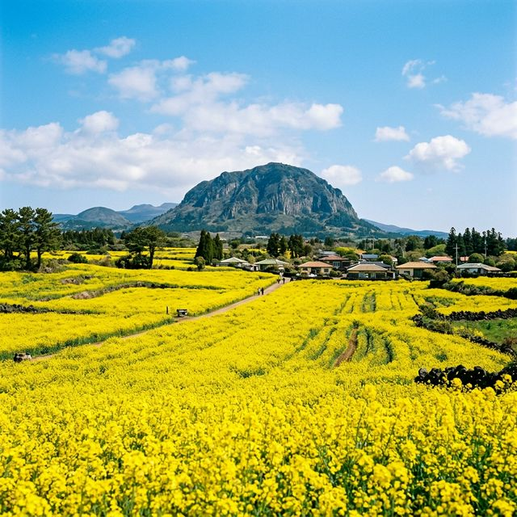
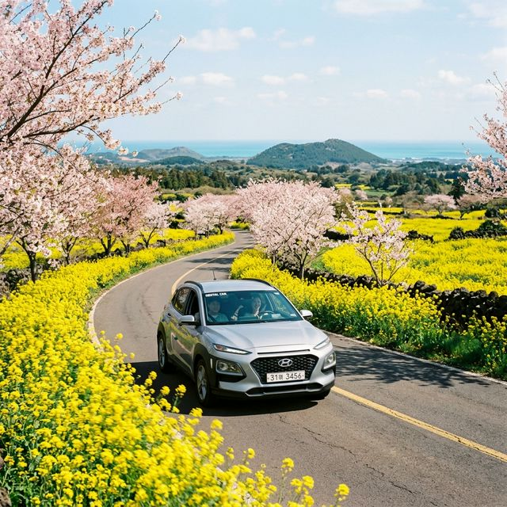

노란 유채와 분홍 벚꽃의 동시 만개: 2026 서귀포 유채꽃축제 & 녹산로 렌터카 드라이브 완벽 가이드
봄 제주도에 딱 두 번의 기적이 찾아옵니다. 하나는 유채꽃이 만개해 온 섬이 노랗게 물드는 순간, 그리고 또 하나는 섬 전체의 벚꽃이 연분홍으로 물드는 순간입니다. 그런데 매년 단 며칠, 이 두 가지
기적이 동시에 일어나는 순간이 있습니다. 바로 서귀포시 표선면 녹산로(鹿山路)에서 노란 유채꽃밭과 분홍 벚꽃 가로수가 나란히 어깨를 맞댄 채 만개하는 환상의 봄날입니다.
2026년에는 이 기적 같은 두 번의 봄꽃이 절정에 달하는 4월 4일(토)~5일(일) 단 이틀간, '제주 서귀포 유채꽃축제'가 녹산로 일대에서 공식적으로 펼쳐집니다.
입장료는 무료. 누구나 환영입니다. 렌터카 드라이브 코스부터 야간 조명 개장 정보, 그리고 같이 둘러볼 수 있는 주변 명소까지 1만 자로 빈틈없이 정리해드립니다.

▲ 유채꽃과 벚꽃이 한 도로 위에서 동시에 만개하는 녹산로. 제주 봄 여행자들이 반드시 달려야 하는 국내 최고의 봄 드라이브 코스입니다. (ratio
1:1)
1. 2026 서귀포 유채꽃축제 핵심 인포 총정리
'유채꽃 하면 제주도, 제주 유채꽃 하면 녹산로'라는 공식이 통용될 만큼 서귀포 녹산로는 대한민국 유채꽃 명소의 대명사입니다. 다만 많은 분들이 간과하시는 중요한 사실이 있습니다. 유채꽃 축제는 단
이틀(4월 4일~5일)이라는 짧은 기간 동안만 공식 운영된다는 점입니다. 물론 그 전후로도 꽃은 피어있지만, 버스킹 공연·플리마켓·야간조명 등 축제 부대 행사들은 이 두
날에만 집중됩니다.
🌻 2026 서귀포 유채꽃축제 핵심 데이터
- 공식 축제 기간: 2026년 4월 4일(토) ~ 4월 5일(일) — 단 2일간
- 장소: 제주특별자치도 서귀포시 표선면 녹산로 381-17 (조랑말체험공원 및 녹산로 유채꽃길 일대)
- 입장료: 무료
- 주요 행사: 유채꽃밭 산책, 버스킹 공연, 플리마켓, 야간 유채꽃 조명 개장
- 찾아가는 법: 제주공항에서 렌터카로 약 1시간 / 표선버스정류장에서 도보 15분
2. 녹산로가 특별한 이유: 벚꽃 + 유채꽃이 동시에 피는 '2색 봄의 기적'
제주도는 한반도보다 기온이 1~2주 정도 앞서 있어 봄꽃이 먼저 피어납니다. 일반적으로 제주의 벚꽃 만개 시기는 3월 하순이지만, 서귀포 내륙 산간 지역은 기온이 조금 더 낮아 4월 초에도 벚꽃이
끝물을 유지하는 경우가 많습니다. 이 시기에 유채꽃이 드넓은 밭을 가득 채우며 절정을 이루게 되면, 도로 한편에는 눈처럼 흩날리는 분홍 벚꽃과 그 아래로 펼쳐지는
샛노란 유채 물결이 동시에 시야를 가득 채우는 장면이 연출됩니다.
이 풍경이 얼마나 낯선 아름다움을 선사하는가 하면, 해외 관광객들이 이 도로를 달리다가 '세상에 어떻게 이런 길이 존재하나' 하며 차를 세우고 한참을 서 있다는 이야기가 제주 렌터카 업계에서는
유명합니다. 영화 세트장 같은 이 풍경은 오직 현장에서만, 그것도 극히 짧은 기간에만 목격할 수 있습니다. 무조건 가야 합니다.

▲ 한라산을 뒤로 두고 펼쳐지는 제주 유채꽃밭의 찰나. 이 황금빛 물결은 매년 딱 이 짧은 시기에만 볼 수 있습니다. (ratio 1:1)
3. 렌터카 드라이브 추천 코스 (녹산로 중심 반나절 코스)
서귀포 유채꽃 축제는 대중교통만으로는 접근성이 다소 떨어집니다. 아름다운 녹산로를 제대로 즐기려면 렌터카가 거의 필수입니다. 아래 코스는 제주시에서 출발해 오후 내내 서귀포 일대를 드라이브하고 저녁
야간 조명까지 즐기는 최적의 반나절 루트입니다.
녹산로 중심 서귀포 봄꽃 드라이브 추천 코스
| 순서 |
목적지 |
소요 시간 및 포인트 |
| 1번째 |
제주공항 → 5·16도로(1131호) |
약 40분. 한라산 관통 드라이브의 시작. 창문 열고 소나무 숲길 공기 흡입 필수. |
| 2번째 |
성읍민속마을 (경유) |
약 20분 정차. 제주 전통 초가집 마을과 한라봉 과즙 시음. 무료 입장. |
| 3번째 |
★ 녹산로 유채꽃길 (메인) |
5km 구간 천천히 드라이브. 조랑말체험공원에 차 세우고 꽃밭 산책, 포토타임. (1~2시간) |
| 4번째 |
표선해비치해변 |
약 15분. 봄 제주 바닷바람 산책. 해변 카페에서 라테 한 잔으로 여행 중반 휴식. |
| 5번째 |
★ 야간 유채꽃 조명 개장 |
일몰 후 (약 7시 30분~) 녹산로 일대 조명 스타트. '낮과 전혀 다른 보랏빛 야경' 연출. |

▲ 창문을 내리고 봄바람을 맞으며 달리는 녹산로 렌터카 드라이브. 이 도로는 드라이브 그 자체로 하나의 여행 목적지입니다. (ratio 1:1)
4. 야간 유채꽃 조명: 낮과는 완전히 다른 보랏빛 마법
낮의 녹산로 유채꽃밭이 '황금빛 물결'이라면, 해가 지고 나서 야간 특수 조명이 켜진 이후의 분위기는 '보라빛과 파란빛이 뒤섞인 몽환적인 마법 세계'라고 표현하는 것이
적절합니다. 야간 조명이 비추는 유채꽃 밭 안을 걷는 느낌은 낮과는 완전히 다른 감성을 제공하며, 커플들 사이에서 SNS 인증샷 성지로도 명성이 높습니다.
💡 야간 조명 포토 꿀팁
야간 촬영 시에는 스마트폰의 '야간 모드(Night Mode)'를 활성화하고 삼각대 혹은 팔꿈치를 고정한 채로 약 3~5초 장노출로 찍으면 꿀 같은 결과물을 얻을 수
있습니다. 조명이 가장 예쁘게 빛나는 황금시간대는 완전히 어두워지기 직전, 하늘에 짙은 남색이 남아있는 블루아워(Blue Hour, 일몰 40분 이후)입니다.
5. 녹산로 주변 같이 가면 좋은 제주 봄 명소
짧은 2일간의 축제 기간을 최대한 알차게 보내고 싶다면, 녹산로 인근에 있는 아래 명소들을 함께 묶어 1박 2일 제주 봄꽃 여행으로 기획하는 것을 추천합니다.
- 가시리 조랑말체험공원: 유채꽃밭 바로 옆에 위치. 미니 조랑말 먹이주기 체험 가능(아이 동반 필수 코스). 입장료 무료(일부 체험 유료).
- 따라비오름: 녹산로에서 차로 10분 거리. 오름 정상에서 내려다보는 유채꽃밭 파노라마 뷰가 압도적. 오름 정상까지 약 20~30분 도보 소요.
- 성읍민속마을: 제주 전통 초가·돌담 마을의 원형이 잘 보전된 역사 관광 명소. 유채꽃축제를 가는 길목에 경유 추천.
- 표선해비치해변: 반원형의 넓은 백사장 해변. 썰물 때는 육지처럼 변하는 신비로운 경험. 제주 봄 날씨의 파란 하늘과 바다 풍경이 최고.
노란색은 봄의 색이고, 분홍색은 설렘의 색입니다. 제주 녹산로는 봄의 두 색깔이 동시에 만나는 기적의 공간입니다. 4월 4일~5일, 단 이틀간만 펼쳐지는 이 눈부신 봄날의 파티에 렌터카 한 대를 끌고
달려가 보세요. 유채꽃밭 한가운데 서서 바라보는 한라산의 실루엣과, 밤하늘 아래 형형색색의 조명을 받아 더욱 빛나는 노란 물결은 2026년 봄의 가장 선명한 기억으로 평생 남을 것입니다.
🌼
데이터 출처: 한국관광공사 대한민국 구석구석 / trip.com 서귀포 유채꽃축제 공식 정보 종합
#서귀포유채꽃축제
#녹산로유채꽃
#제주4월여행
#제주봄여행
#제주렌터카드라이브
#유채꽃벚꽃동시만개
#조랑말체험공원
#따라비오름
#야간유채꽃
#제주봄꽃축제
#표선해비치
#제주당일치기
#제주1박2일코스